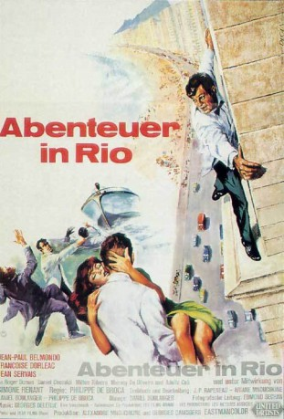

IMDB-Wertung: 7.1 / 10
IMDB-Wertung: 7.1 / 10  Metascore:
Metascore: 
Soldat Adrien folgt seiner entführten Braut Agnès nach Brasilien. Die kapriziöse Agnès ist einem Geheimnis dreier Statuen auf der Spur und kommandiert den armen Trottel von einem Abenteuer ins nächste.
Alternativ: That Man from Rio (Englischer Titel)
Auszeichnungen: für 1 Oscars nominiert
 IMDB-Wertung: 7.1 / 10 Metascore:
Soldat Adrien folgt seiner entführten Braut Agnès nach Brasilien. Die kapriziöse Agnès ist einem Geheimnis dreier Statuen auf der Spur und kommandiert den armen Trottel von einem Abenteuer ins nächste.
Jahr: 1964
Dauer: 115 Minuten
FSK: 12
Land: Frankreich Studio: United ArtistsTonspuren:
Untertitel: Deutsch,
Auflösung: 1080p (1792x1080) Größe: 8949 MB
Genre: Action, Komödie, Abenteuer, Liebe
Regisseur: Philippe de Broca
Drehbuch: George Putnam
Soundtrack:
Darsteller:
 Jean-Paul Belmondo als Pvt. Adrien Dufourquet
Jean-Paul Belmondo als Pvt. Adrien Dufourquet Daniel Ceccaldi als Police inspector
Daniel Ceccaldi als Police inspectorDatei: X:\1964\Abenteuer in Rio (1964, FSK12, 1792x1080).mkv seit 20.03.2017
Festplatte: HD 1900-1970
 Es gibt insgesamt 22 Filme in der Gruppe '1964'
Es gibt insgesamt 22 Filme in der Gruppe '1964'